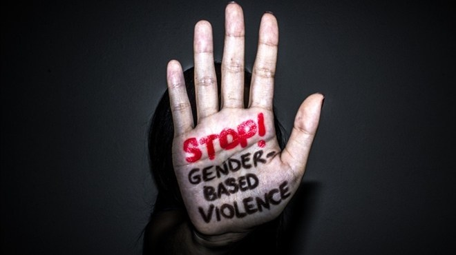

HomePage
AboutUs
News
ProductAndServices
ContactUs
A total of 77 gender-based violence (GBV) cases reported over the last six months in the Mpumalanga have been struck off the court roll due to the inefficiency of the SA Police Service.
"Investigators work under immense strain and at times they each sit with well over 200 dockets. This failure does however not justify their inability to comply with their oath and fulfil their constitutional mandate."
Allen said he would engage provincial police commissioner, Lieutenant General Thembisile Patekile, as he needs to establish whether the officers that have failed the citizens will be held accountable, should this not have occurred yet.
Published on: September 12, 2023
stop-gender-based-violence
Potelwa was allegedly fatally shot at about 19:00 by unknown assailants.
Gade sent his heartfelt condolences to the bereaved family and friends and hope they find solace in the God during this trying time of their lives.
“All the individuals at the school who have been affected by the incident will be provided with psycho-social grant, as the district will activate the service for them,” said Mtima.
The SAPS has not yet confirmed the alleged fatal shooting.
Published on: September 11, 2023
